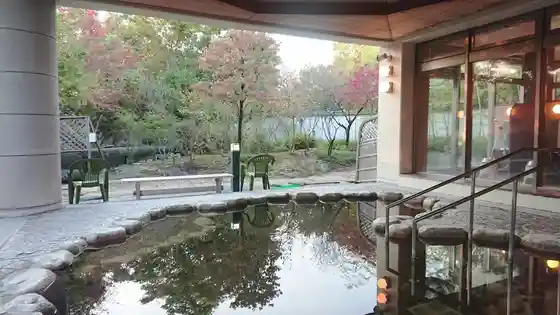
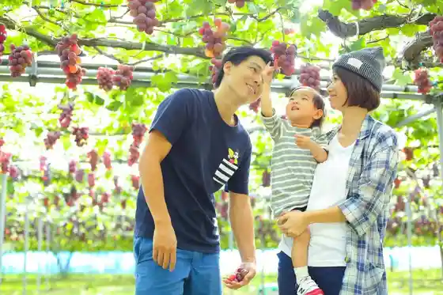
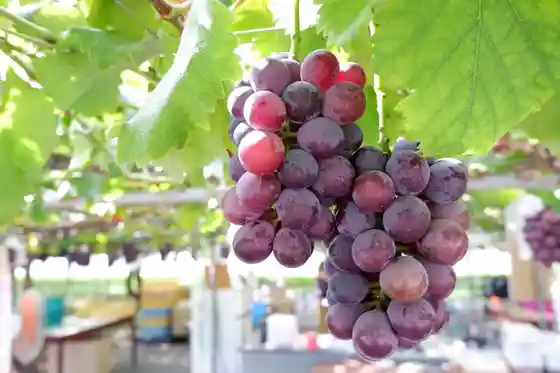
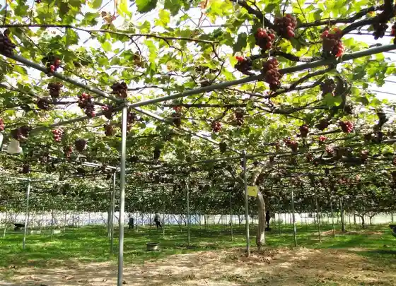

Seiro Kannon Baths (Zabu N)
Seiro, Niigata · 0254-27-1126 · Official / source link

Ajiro Hama Beach
Seiro, Niigata · 0254-27-2111 · Official / source link
Ripifarm Takahashi Kyoho Sono
Seiro, Niigata · 090-7000-1780 · Official / source link

Seiju Sono
Seiro, Niigata · 070-4109-6920 · Official / source link

Kobayashi Farm
Seiro, Niigata · 090-5401-0540 · Official / source link

Benten Kata Scenic Park
Seiro, Niigata · 0254-27-2111 · Official / source link
Ito Farm
Seiro, Niigata · 090-8014-5222 · Official / source link
Sakaue Budo Sono
Seiro, Niigata · 0254-27-3125 · Official / source link
Tanaka Farm
Seiro, Niigata · 090-8251-9768 · Official / source link
Amano Sakurambo Kari Sono
Seiro, Niigata · 090-5409-4159 · Official / source link
Seiro Jiba Bussan Kan
Seiro, Niigata · 0254-27-1212 · Official / source link
Kenzugurepu Garden
Seiro, Niigata · 080-1078-4233 · Official / source link
Iwa Ryo Farm
Seiro, Niigata · 070-2646-7524 · Official / source link
Otani Farm
Seiro, Niigata · 090-4822-9864 · Official / source link
Kuni Toroku Yukei Bunkazai Ninomiya Ie Garden (Josho Sono) to Bara Sono
Seiro, Niigata · 0254-27-2002 · Official / source link
Saka Sei Farm
Seiro, Niigata · 090-2971-1906 · Official / source link
Tanaka Budo Sono
Seiro, Niigata · 090-3339-5907 · Official / source link
Mizuho Farm
Seiro, Niigata · 0254-27-5352 · Official / source link
Maruhan Ito Farm
Seiro, Niigata · 090-1793-3219 · Official / source link
Awaji Farm
Seiro, Niigata · 090-5561-6852 · Official / source link
Bohatei De Dekiru Umizuri Ri Niigata Higashiminato Dai 2 Higashi Bohatei
Seiro, Niigata · 025-278-3061 · Official / source link